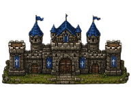
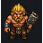
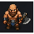

Defesa do Castelo
Tower Defense Medieval — feito com agentes de codificação
Atividade 02 — Criando um Jogo · HTML5 Canvas + JavaScript
Josué Oliveira · Roberto Rawlison
O Jogo
O que é
- Tower defense que roda no navegador
- Defenda o castelo de 10 ondas de bárbaros
- Só torres automáticas — sem personagem
- Moedas → comprar e melhorar torres

Martelo
básico
Machado
tanque
Assets
Imagens de referência
Geradas no ChatGPT em pixel art e recortadas por nós para a pasta assets/.
Besta
Catapulta
Castelo (base a defender)
Como pedimos
Os prompts iniciais
"crie um jogo de tower defense [...] defender o castelo contra bárbaros e coletar moedas derrotando-os"
"comprar torres de arqueiros, bestas e catapulta — três tiers de armas" · "3 tipos de bárbaros"
"uma pausa entre ondas para colocar torres" · "mapa gerado aleatoriamente com caminhos" · "torres em pontos fixos ao redor dos caminhos"
"agora, para o plano, faça perguntas e dê sugestões de como pode ser feito"
Planejamento
Decisões fechadas com o agente
Antes de programar, o agente fez perguntas. Nossas respostas viraram o plano do projeto:
HTML5 Canvas + JS puro
Sem cavaleiro — só torres
Grid com múltiplos caminhos
Sprites PNG (pixel art)
Castelo com HP
10 ondas, vitória final
Upgrade in-place
Grid 36×21 · 48px
furioso=veloz · martelo=básico · machado=tanque
Ferramentas
Como construímos
- Claude Code — agente único que lê/escreve arquivos e roda comandos
- Modelos Claude: Sonnet (rápido) e Opus (planejamento)
- ChatGPT — geração das imagens dos sprites
Ponto de partida
Experiência prévia
- HTML / JavaScript: básica
- Desenvolvimento de jogos: nenhuma
Novidades para nós:
game loopdelta time
geração proceduralpathfinding (BFS)
Web AudiolocalStorage
Etapa 1
Base do jogo
- Mapa com caminhos + encaixe automático dos tiles
- Torres com upgrade e projéteis (catapulta em arco)
- 3 inimigos, 10 ondas e fase de construção
- Vitória/derrota pelo HP do castelo
Etapa 2
Dificuldade & pontuação
- Dificuldade Fácil / Difícil + regenerar labirinto
- Pontuação pela vida do castelo preservada (100% = perfeito)
- High scores: ranking das melhores tentativas
Etapa 3
Loop de arcade
- Tela de abertura — interagir para começar
- Game over → volta ao início
- Attract mode (demo) + tela de high scores no loop
Etapa 4
Outras adições
- Persistência: ranking no localStorage
- Sprites direcionais (4 direções)
- Áudio: música + efeitos MP3
- Extras: velocidade 1x–4x, indicador de surgimento
Não foi linear
Retrabalho
- Cache do navegador: botões "paravam" → servidor sem cache
- Diminuir o mapa quebrou os caminhos → revertido
- Calibragem do zig-zag e frestas entre tiles (ajustes iterativos)
Conclusões
O que levamos
- A inexperiência não impediu — o agente comprimiu a curva
- Código legível e modular, mas refatorável se crescer
- Déficit de compreensão: entendemos no geral, não a fundo
- "Funciona na tela" ≠ "código bom" — validar exige entender
Demonstração ao vivo
Obrigado!
github.com/robertorawlison/tower-defense
Josué Oliveira · Roberto Rawlison